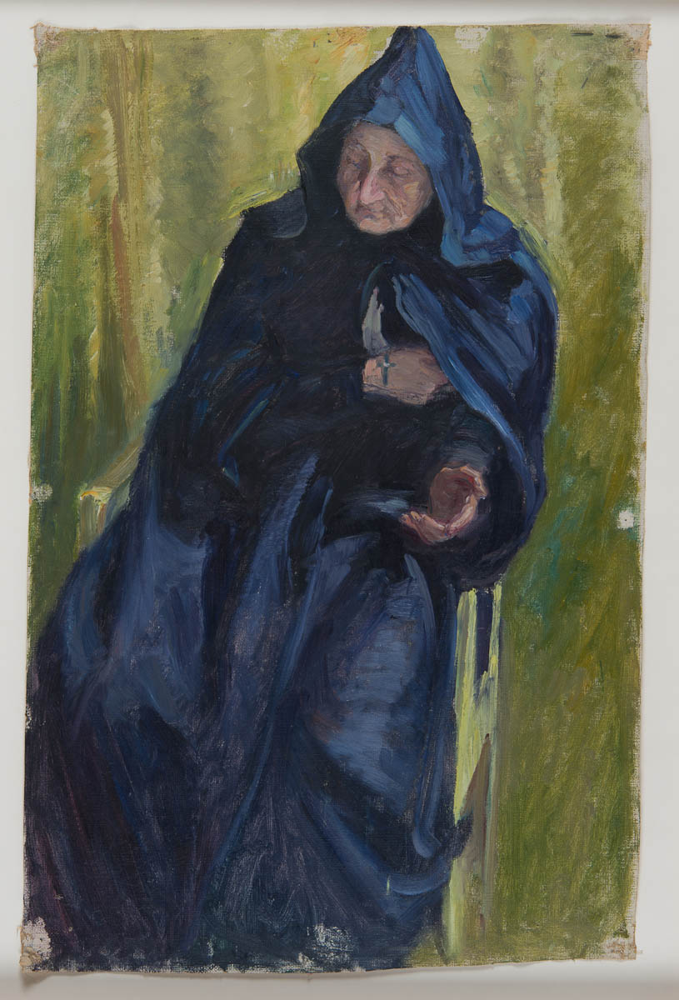
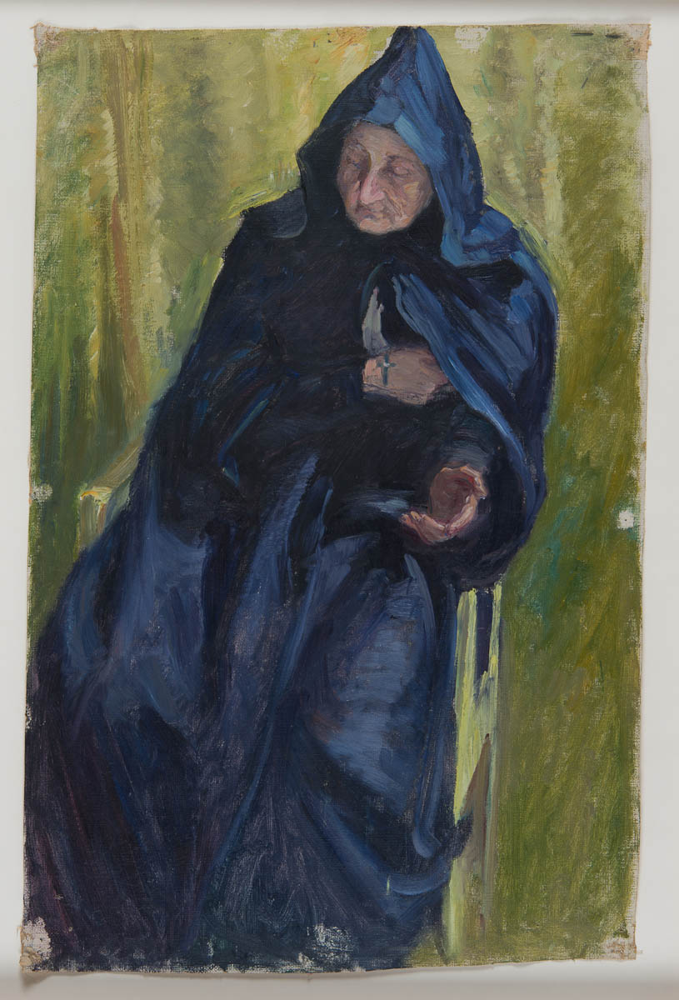

In her will, Hilma af Klint left all her abstract paintings to her nephew, a vice-admiral in the Swedish Royal Navy. She specified that her work should be kept secret for at least 20 years after her death. When the boxes were opened at the end of the 1960s, very few persons had knowledge of what would be revealed.
In 1970 her paintings were offered as a gift to Moderna Museet in Stockholm, which declined the donation. Thanks to the art historian Åke Fant, her art was introduced to an international audience in the 1980s, when he presented her at a Nordik conference in Helsinki in 1984. Erik af Klint then donated thousands of drawings and paintings to a foundation bearing the artist's name in the 1970s.
The collection of abstract paintings of Hilma af Klint counts more than 1200 pieces. It is owned and managed by the Hilma af Klint Foundation[18] in Stockholm, Sweden. In 2017, Norwegian architectural firm Snøhetta presented plans for an exhibition centre dedicated to af Klint in Järna, south of Stockholm, with estimated building costs of between €6 million and €7.5 million. In February 2018, the Foundation signed a long-term agreement of cooperation with the Moderna Museet, thereby confirming the perennity of the Hilma af Klint Room, i.e. a dedicated space at the museum where a dozen works of the artist are shown on a continuous basis.
Sources: artforum ny times interior design